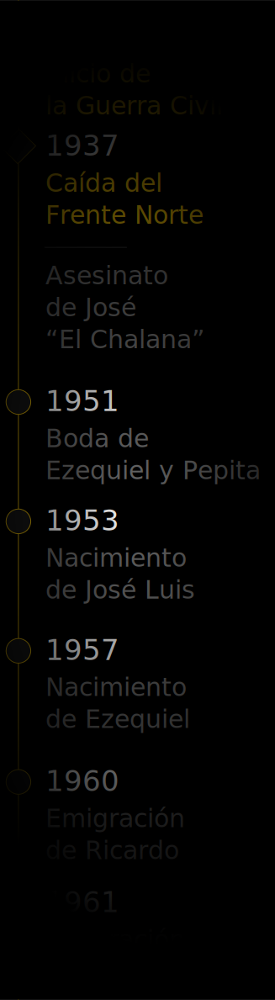
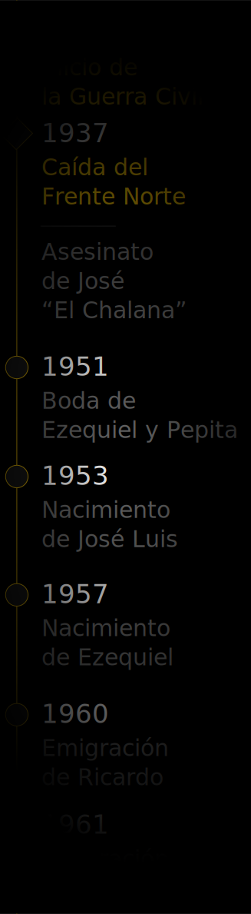
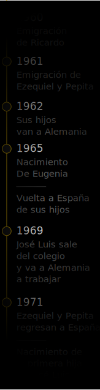
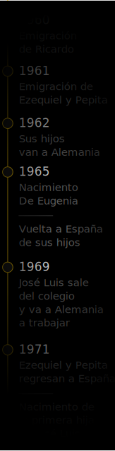

1. Raíces
Esta es la historia de los que partieron y regresaron, de aquellos que se quedaron y de quienes todavía no se han ido. Una familia marcada por la emigración en una Europa divida.

Una familia dividida por la búsqueda de una prosperidad que nunca pareció corresponderles. Vidas construidas en torno a la dureza del trabajo físico, nocturno, repetitivo y peligroso, en equilibrios imposibles entre dos zonas mineras a mil setecientos kilómetros de distancia. Es la historia de Ezequiel y Pepita, quienes engrosaron las filas de la emigración asturiana en los años sesenta, haciendo de Alemania su hogar durante una década. Es también la historia de sus hijos, quienes hicieron suyo aquel país hasta el día de hoy. Es también la historia de la familia que les sucedió, de identidades cuestionadas, ausencias, distancias y preguntas de difícil respuesta. Es el mundo del trabajo llevado a lo concreto, dotado de rostro, humanizado y reconstruido para ser contado.
Timeline
fading
Una familia dividida por la búsqueda de una prosperidad que nunca pareció corresponderles. Vidas construidas en torno a la dureza del trabajo físico, nocturno, repetitivo y peligroso, en equilibrios imposibles entre dos zonas mineras a mil setecientos kilómetros de distancia. Es la historia de Ezequiel y Pepita, quienes engrosaron las filas de la emigración asturiana en los años sesenta, haciendo de Alemania su hogar durante una década. Es también la historia de sus hijos, quienes hicieron suyo aquel país hasta el día de hoy. Ineludiblemente, es también la historia de la familia que les sucedió, de identidades cuestionadas, ausencias, distancias y preguntas de difícil respuesta. Es el mundo del trabajo llevado a lo concreto, dotado de rostro, humanizado y reconstruido para ser contado. María Josefa Álvarez García “Pepita” (1934) y Ezequiel Suárez Solís (1932–2002) son dos hijos de la clase social sobre la que no suelen versar las historias. Silenciada, despersonalizada, infravalorada y parodiada: la clase obrera construye el presente y el futuro, pero no tiene el lugar que se merece en la historia. Al fin y al cabo, ésta es escrita por los vencedores. La de Ezequiel y Pepita es una historia de heroicidad diaria y silenciosa, más cercana del maratón que del sprint, donde el reto es alimentar a la familia un día sí y otro también, jugarse la vida picando carbón en las galerías o colgándose de cables de acero. Levantarse cada mañana y ponerse las botas aunque te duelan los pies, las manos, los hombros, la espalda y cada centímetro de tu piel. Solo quienes han tenido estas penalidades suficientemente lejos de su vida se atreven a menospreciarlas. Buscando los héroes en lo cotidiano cambia nuestra forma de mirar a los condenados al anonimato.María Josefa Álvarez García “Pepita” (1934) y Ezequiel Suárez Solís (1932–2002) son dos hijos de la clase social sobre la que no suelen versar las historias. Silenciada, despersonalizada, infravalorada y parodiada: la clase obrera construye el presente y el futuro, pero no tiene el lugar que se merece en la historia. Al fin y al cabo, ésta es escrita por los vencedores. La de Ezequiel y Pepita es una historia de heroicidad diaria y silenciosa, más cercana del maratón que del sprint, donde el reto es alimentar a la familia un día sí y otro también, jugarse la vida picando carbón en las galerías o colgándose de cables de acero. Levantarse cada mañana y ponerse las botas aunque te duelan los pies, las manos, los hombros, la espalda y cada centímetro de tu piel. Solo quienes han tenido estas penalidades suficientemente lejos de su vida se atreven a menospreciarlas. Buscando los héroes en lo cotidiano cambia nuestra forma de mirar a los condenados al anonimato.
 

 

Audio
while reading
Unos años atrás, cuando Ricardo todavía se encontraba en Alemania, sufrió un accidente de tráfico mientras se dirigía a Düsseldorf para realizar los rutinarios trámites de documentos a los que los inmigrantes españoles se veían sometidos con regularidad. Para convencer a su madre Lola de que no había revestido gravedad, volvió a Asturias para encontrarse con la familia. Él vió oportuno tratar de convencer a sus allegados en aventurarse a probar suerte en el extranjero como él llevaba haciendo desde hacía un año. Pese a tener trabajo en aquel momento, Pepita y Ezequiel decidieron aceptar la propuesta y embarcarse en lo que serían casi diez años de trabajo en tierras alemanas. Dejaron tras de sí su casa de Entrialgo, que sería alquilada durante unos años y finalmente vendida por el tío de Ezequiel, Alfredo, por valor de 350.000 pesetas. Ricardo, sin embargo, nunca conseguiría convencer a su madre Lola –una mujer independiente y trabajadora– de seguir sus pasos, ya que ésta sabía que terminaría únicamente cuidando de sus nietos para que los más jóvenes se enfocaran en el trabajo a destajo y el ahorro.
Al comienzo de septiembre de 1961, Ezequiel y Pepita comienzan en el largo y tortuoso trayecto en tren que uniría su pequeña y aislada Cuenca del Nalón con las planicies y campos de Renania del Norte–Westfalia. A las siete de la mañana, un tren que tanto transportaba pasajeros como toneladas de carbón, La Campurra, les lleva de Entrialgo hasta Pola de Laviana. Allí parten hacia la costa gijonesa. Pasearían por la ciudad –a la que no iban regularmente– para terminar embarcándose a las nueve de la noche en el tren con destino a La Robla, León. Pepita, una mujer nerviosa, y no muy viajada, gritaba al asustarse cada vez que el entre atravesaba uno de los numerosos túneles en su recorrido montañoso hacia el sur. El siguiente destino sería Irún, localidad vasca que hace de frontera entre el territorio español y el francés. Los diferentes anchos de vía y la consecuente necesidad del transbordo reforzaban la idea de estar abandonando aquel país gris y represivo que era España, para entrar en una realidad que en cuanto a derechos y libertades civiles parecía a años luz. El tren tendría como destino la Gare d’Austerlitz, estación parisina al sudeste de la ciudad, a orillas del río Sena. Es una imagen tierna la de la joven pareja cruzando París, cargados de maletas, con el nombre de la estación a la que se dirigían escrito a mano por Ricardo en un pedazo de papel. Ya en la Gare du Nord se subirían al último de los trayectos en ferrocarril, con destino Lieja, Bélgica.
Una vez llegados en el país vecino, Ricardo vendría vendría a su encuentro, para facilitarles los documentos que les permitirían entrar al país. A diferencia de otros procesos migrantes en Alemania en años posteriores, en aquella época pocos llevaban el trabajo asegurado. Por tanto, entraban en Alemania como falsos turistas, y en esta ocasión, con la justificación de un supeusto bautizo del hizo de Ricardo –el cual ya se había celebrado un año atrás. Peor suerte correrían otros, como su amigo “Manolín”: las ropas de trabajo, llenas de cal, alertaron a los gendarmes, quienes no le permitieron proseguir. La última vez que lo verían, sería mientras se despedía desde la ventana de la comisaría de policía. Manolín terminaría trabajando en Bélgica durante años, donde ya tenía tres hermanas.
El primer hogar tras su llegada a Alemania, sería la cocina de Ricardo. Pasarían luego un mes en casa de la hermana de Ezequiel, Chelo, quien habría ido poco tiempo antes con su marido Ceferino. Fue un domingo cuando llegaron a Alemania y fue un lunes cuando Ezequiel bajaría a la mina Emile Mayrisch con Ricardo por primera vez. Al igual que su hermano, decidió trabajar en el derrabe, la extracción de mineral con martillo neumático. La Alemania que mis abuelos se encontraron, quince años después del fin de la guerra, no había conseguido despegarse completamente de su pasado. El primer alojamiento que la empresa les facilitó era el llamado “Casino” de Alsdorf, un antiguo edificio que hizo de vivienda para las tropas alemanas en la guerra, y luego para los proletarios que el país necesitaba. Un país con una capacidad económica creciente, que requeriría de mano de obra imperiosamente durante las siguientes décadas para tareas de reconstrucción y levantar el “milagro económico alemán”.
La siguiente localización temporal facilitada por la empresa fue uno de esos detalles históricos que los alemanes se han esforzado por hacer desaparecer: las barracas de madera. Letrinas colectivas, hacinados en poco espacio y tomando baño en un barreño. Por último, fueron instalados en unas viviendas obreras en Aldenhoven. Si bien modestas y no muy espaciosas, se convertirían en el nuevo hogar de la familia Suárez Álvarez durante los años que les restarían emigrados. Se mudarían del número 16 al número 18 en la misma calle, pasando a disponer de una huerta y un garaje donde disfrutarían de espacio exterior. Al fin y al cabo, Aldenhoven, pese a sus reducida extensión, se convirtió en localidad más poblada donde habían residido.
Ezequiel no tendría la suerte de su lado. No permaneció todos los años el tiempo en el mismo puesto de trabajo, ya que un año más tarde sufrió un accidente grave al quedar enterrado tras un derrumbe. No fueron lesiones severas, y solamente pasó un día en el hospital, pero tras este suceso, pasaría a dedicarse a tareas que le eran más propias, acordes a su condición de mecánico calderero. Sería en este puesto donde conocería a Billy von Vover, con quien trabajaría durante años en el turno nocturno encargándose del mantenimiento del pozo. No lo sabían todavía, pero Billy se convertiría su consuegro, unos diez años más tarde. Pepita comenzó a trabajar en lo que pensaba sería una continuación de su profesión anterior. No obstante, cambió la pequeña habitación de costura en un pueblo asturiano por un proceso industrializado en una fábrica alemana. No consiguió establecerse: cambiaban las partes que debía coser cada día y le daban órdenes en un idioma totalmente desconocido. Finalmente, terminó buscando otro trabajo. Comenzaron entonces nueve años consecutivos en la empresa Philips ensamblando pequeñas bombillas. Cuántas veces habremos oído en casa las historias del gélido frío invernal camino a la factoría, combatido por capas de periódicos envolviéndole el cuerpo. No sería aquella una época de huelgas, aunque sí había representación sindical, proceso en el que mis abuelos se involucraron, ejerciendo el derecho al voto.
Unos meses después de llegar a Alemania por primera vez, ya en 1962, Ezequiel se desplazó hasta Asturias y regresó el mismo fin de semana con sus dos hijos, José Luis y Ezequiel. El equipaje viajó paralelo a ellos en tren, ya que no había espacio en el coche: Ezequiel viajó en el cuello de su padre durante esos mil setecientos kilómetros. Con seis y cuatro años, consiguieron aprender el idioma, aunque los recuerdos de estar en una escuela sin entender ni una sola palabra perduran. No existía segregación en las aulas, esos alumnos de cabello negro como el carbón eran identificables en las fotos de grupo. Excepto en la primera comunión. Ezequiel se convirtió en uno de los pocos niños que hayan hecho una “primera comunión” en dos ocasiones. Volvió a casa un sábado asegurando que al día siguiente era el susodicho evento, y su madre –bastante histérica– salió camino a Holanda, donde las tiendas estarían abiertas, para comprar a su hijo ropa adecuada. Fue el único niño español que hizo la comunión con los niños alemanes. El 30 de junio de 1965 la familia se completaría con el nacimiento de Eugenia en tierras alemanas .
Videos
fullscreen
María Josefa Álvarez García “Pepita” (1934) y Ezequiel Suárez Solís (1932–2002) son dos hijos de la clase social sobre la que no suelen versar las historias. Silenciada, despersonalizada, infravalorada y parodiada: la clase obrera construye el presente y el futuro, pero no tiene el lugar que se merece en la historia. Al fin y al cabo, ésta es escrita por los vencedores. La de Ezequiel y Pepita es una historia de heroicidad diaria y silenciosa, más cercana del maratón que del sprint, donde el reto es alimentar a la familia un día sí y otro también, jugarse la vida picando carbón en las galerías o colgándose de cables de acero. Levantarse cada mañana y ponerse las botas aunque te duelan los pies, las manos, los hombros, la espalda y cada centímetro de tu piel. Solo quienes han tenido estas penalidades suficientemente lejos de su vida se atreven a menospreciarlas. Buscando los héroes en lo cotidiano cambia nuestra forma de mirar a los condenados al anonimato.
Aquí pongo rostro y nombre a una historia de migración económica, que reflexiona sobre las difíciles decisiones que afrontamos en nuestra vida y cómo dan forma a las generaciones venideras. Emigrar se convierte en un reto propio de un equilibrista, en el que no se conoce el final y del que se ha removido la red que frene su caída. Seguir avanzando en el inestable cable de acero es la única opción. Volver atrás no es posible y cada vez la distancia con el origen es mayor. Y cuando el miedo te atenaza, una pregunta acecha: ¿para que me habré metido yo en este embolado? Pepita y Ezequiel fueron poniendo parches a lo largo de los años, esperando paliar las consecuencias de haberlo dejado todo tras de sí durante una década. Como quien ataca los síntomas y no la enfermedad, se alejaron de sus hijos para acelerar el ahorro que se erigía como la razón de peso de la emigración. Dividieron a la familia, la hirieron con esa insalvable distancia en aquellos años en que los niños deberían estar con sus padres. Existe aquí el riesgo de juzgar desde una perspectiva incorrecta. Ejercer una empatía real pasaría por ponerse en el lugar de quien sufrió las condiciones penosas de la Guerra Civil, el hambre de la posguerra y de a quienes las dificultades económicas nunca abandonaron. Aquel país todavía en reconstrucción y que disfrutaba de todo el apoyo para convertirse en un nuevo imperio económico, necesitaba de mano de obra urgente. El trabajo no escaseaba. Alemania parecía una opción segura y así lo aseguraban los que se fueron antes que ellos. ¿Quién sería el primero en probar suerte?
Aquí pongo rostro y nombre a una historia de migración económica, que reflexiona sobre las difíciles decisiones que afrontamos en nuestra vida y cómo dan forma a las generaciones venideras. Aquí pongo rostro y nombre a una historia de migración económica, que reflexiona sobre las difíciles decisiones que afrontamos en nuestra vida y cómo dan forma a las generaciones venideras. Aquí pongo rostro y nombre a una historia de migración económica, que reflexiona sobre las difíciles decisiones que afrontamos en nuestra vida y cómo dan forma a las generaciones venideras.Aquí pongo rostro y nombre a una historia de migración económica, que reflexiona sobre las difíciles decisiones que afrontamos en nuestra vida y cómo dan forma a las generaciones venideras.Aquí pongo rostro y nombre a una historia de migración económica, que reflexiona sobre las difíciles decisiones que afrontamos en nuestra vida y cómo dan forma a las generaciones venideras.
El río Nalón serpentea por un valle salpicado por pozos de carbón y castilletes, cubierto por un manto verde y por casas que desafían la gravedad de su escarpada orografía.Deja la racionalidad a parte cuando habla de esa lotería que sigue sin tocar o cuando de forma frontal expresa sus infundados miedos sobre el siguiente viaje de sus hijos al extranjero. La ternura que expresa a sus nietos tampoco parece tener límite, mientras intenta expresar con palabras un amor que no acepta ser moldeado por el lenguaje. De familia con pocos recursos, Pepita repitió toda su vida como un mantra algo que marcó varias generaciones en nuestro país: el hambre de la posguerra. Como se dice en lengua asturiana: la fame. La suya era una zona de pequeñas propiedades – pequeños huertos y poco ganado– así que el estraperlo y la compraventa informal florecieron. La creatividad para alimentar malamente a la familia marca aquella generación que en su gran mayoría, sufrió severas dificultades. El miedo a que los fantasmas del pasado retornen eclipsa la idea de que el futuro también puede deparar penurias similares.
Fading side images
La familia de Ezequiel
Ezequiel procede de una familia más inusual que la de Pepita. Su madre había estado casada con Alfredo, con quien tendría a su primer hijo: Ricardo. Antes de terminar su relación con Alfredo, Lola comenzó a verse con José Manuel Suárez Corte “Chalana”, con quien pese a no contraer matrimonio, tendría tres hijos. Alfredo registró a Ezequiel como su hijo, bajo el nombre de Jeromo González Solís un 28 de julio de 1932. Sería su madre Lola quien lo registraría nuevamente, esta vez bajo el nombre de Ezequiel, con la fecha de nacimiento de su padre José: un 9 de abril de 1932. José siempre trataría a Ricardo como otro hijo más. Para ayudar a la nueva familia, José compró la mitad de la casa de la madre de Lola para ayudar a que que sus hijos y su pareja tuvieran un hogar. El primer marido de Lola, Alfredo, moriría en 1947 en un accidente laboral en una mina de extracción de carbón.
José “Chalana” era contratista de madera. Los que le conocían le recordaban con su pesada y potente moto recorriendo el valle. José, pese a no participar directamente en los combates de la Guerra Civil, era socialista, y fue preso por las tropas fascistas en la cárcel de Laviana.
El Frente Norte, había caído, y las tropas republicanas no pudieron contener más el avance de los fascistas. Poco tardarían en aplicar la Instrucción Reservada Base 5ª del 19 de julio de 1936, que clamaba “Es necesario crear una atmósfera de terror, hay que dejar sensación de dominio eliminando sin escrúpulos ni vacilación a todo el que no piense como nosotros . Tenemos que causar una gran impresión, todo aquel que sea abierta o secretamente defensor del Frente Popular debe ser fusilado”. Sería un 26 de noviembre de 1937 cuando José, otros tres hombres y cinco mujeres, serían sacados al amanecer de la cárcel en un camión con destino a Oviedo. El padre de Ezequiel se escaparía del camión en marcha con sus manos atadas. Sería interceptado cerca de la estación de ferrocarril y asesinado a golpes con una llave de reparación de vías. El fascista que le sesgó la vida frívolamente gritó “A este Chalana ‘no hay dios’ quien lo mate”. Los otros ocho compañeros serían sacados del camión en una escombrera en la conocida como Cuesta de Vindoria, y fusilados al alba. Muchos años más tarde del hediondo crimen y una profunda investigación, Ricardo consiguió conocer la identidad y localización del asesino de José. Se dió el caso que el susodicho falangista tenía por costumbre pasear todos los días por la playa San Lorenzo en Gijón, a cinco minutos de la casa que Pepita y Ezequiel comprarían años más tarde.
El cuaderno de ventas de José Chalana.

Ezequiel probando su fortaleza a otros inmigrantes en Alemania.
Lola, la madre de Ezequiel.

Ezequiel a caballo con unos dieciocho años.
Gracias a la firmeza de mi abuela, los dos hermanos fueron a encontrarse con el criminal. Ella “no quería ir a visitarles a la cárcel”. Ezequiel perdió a su padre muy joven, con cinco años de edad. Nunca se conservaron fotografías de él, pero el infante consiguió guardar para siempre una vívida imagen: trepando por las curvas del concejo en la ruidosa motocicleta con Jose, camino al Alto de San Pedro. Su padre le golpearía levemente con el manillar y se le llenarían los ojos de lágrimas por haber lastimado a su retoño.
La madre de Ezequiel, Lola, fue una mujer de una fortaleza enorme, muy inteligente e independiente. Siempre trabajó como sirvienta en casas de familias adineradas, como para la familia Velasco en el pueblo de Sotrondio. Apoyó a la guerrilla antifranquista –también llamada maquis –nombre atribuido por la lucha de muchos de ellos en la liberación de Francia de las tropas del Tercer Reich. El pequeño Ezequiel, de cuatro años de edad, en varisa ocasiones llevaba comida a un punto acordado en la montaña, donde más tarde guerilleros como los hermanos Caxigales, pasarían a recogerla. Ellos habrían estado en casa de Lola en algunas ocasiones, para luego volver a “echarse al monte”. Tras la muerte de José, la familia pasó por épocas muy difíciles, y el ingenio para conseguir ingresos florecía. Por ello era relevante que su hijo Ezequiel estuviese registrado a nombre de José, proveniente de una familia económicamente más holgada.
Los hermanos de José ‘el Chalana’ eran dueños de un restaurante de bastante éxito llamado Casa Hermanos Suárez, en Entrialgo, ostentaban la propiedad de algunas tierras en la zona. No obstante, con el dinero suelen venir los problemas.
Fullscreen
Gallery
El mayor de los hermanos, quien llevaba el nombre familiar, se mudó a Argentina. Sus cuatro hermanas nunca se casaron: en cartas quedó marcado el rastro de la presión familiar a la que eran sometidas por el resto de hermanos. Por último está Alfredo, el personaje más oscuro. Siempre de gafas de sol, autoritario y reaccionario, fue apropiándose de buena parte de las propiedades de la familia, a la vez que pagando deudas de sus congéneres. Tampoco se casó, aunque sí dejó un vástago, que tras su muerte heredó buena parte de las propiedades que en su día pertenecieron a todos los hermanos. Alfredo llegó a poner una pistola en el pecho a su sobrino Ezequiel, para forzarle a que firmase la venta de su parte en la propiedad de un manzanar. Quien conociera a Ezequiel –y a buena parte de los hombres de la zona– sabría que la terquedad está en su ADN. Hizo gala de ello al responderle “tira si te atreves”. Un hecho como este para muchos sería un punto y final, pero nunca llegaría a romper relaciones.

El cuaderno de ventas de José Chalana.
La mina al pie de la carretera.
El valle del Nalón.

Si bien no hay muchas carreteras rectas en Asturias, la que une Muñera y Ciargüelo es una excepción. Como a modo de metáfora, el kilómetro que separa a las dos poblaciones es una línea recta, que no obedece los meandros del río. Pepita conocía a Ezequiel desde que eran niños, durante toda su vida. De hecho, los dos nacieron con cinco días de diferencia. Tardarían 17 años en conocerse de verdad y ganar confianza. Sería durante una Semana Santa, en la que como tantas otras desde el inicio de la dictadura, los bailes no estaban permitidos. La policía custodiaba los locales donde los jóvenes se relajaban, se divertían y enamoraban. Como prohibir a la gente ser feliz es un camino de corto recorrido, algunas señoras con panderetas y botellas tocaban al borde de la carretera, música que los jóvenes y no tan jóvenes acompañaban con sus bailes. Comenzaría aquel día una relación que se extendería a lo largo de todas sus vidas.
Pinned
Images
Cuatro años más tarde, el segundo, quien tomaría el nombre de su padre: Ezequiel. La familia solo se completaría en 1965 con el nacimiento de Eugenia. Esos primeros años en el valle serían para siempre recordados por los dos hermanos como los más felices. Disfrutaban de gran libertad y pasaban sus horas en espectaculares paisajes, en los que el río Nalón y sus afluentes tendrían un rol mayúsculo. Unos años atrás, cuando Ricardo todavía se encontraba en Alemania, sufrió un accidente de tráfico mientras se dirigía a Düsseldorf para realizar los rutinarios trámites de documentos a los que los inmigrantes españoles se veían sometidos con regularidad. Para convencer a su madre Lola de que no había revestido gravedad, volvió a Asturias para encontrarse con la familia. Él vió oportuno tratar de convencer a sus allegados en aventurarse a probar suerte en el extranjero como él llevaba haciendo desde hacía un año. Pese a tener trabajo en aquel momento, Pepita y Ezequiel decidieron aceptar la propuesta y embarcarse en lo que serían casi diez años de trabajo en tierras alemanas.
Dejaron tras de sí su casa de Entrialgo, que sería alquilada durante unos años y finalmente vendida por el tío de Ezequiel, Alfredo, por valor de 350.000 pesetas. Ricardo, sin embargo, nunca conseguiría convencer a su madre Lola –una mujer independiente y trabajadora– de seguir sus pasos, ya que ésta sabía que terminaría únicamente cuidando de sus nietos para que los más jóvenes se enfocaran en el trabajo a destajo y el ahorro.

Al comienzo de septiembre de 1961, Ezequiel y Pepita comienzan en el largo y tortuoso trayecto en tren que uniría su pequeña y aislada Cuenca del Nalón con las planicies y campos de Renania del Norte–Westfalia. A las siete de la mañana, un tren que tanto transportaba pasajeros como toneladas de carbón, La Campurra, les lleva de Entrialgo hasta Pola de Laviana. Allí parten hacia la costa gijonesa. Pasearían por la ciudad –a la que no iban regularmente– para terminar embarcándose a las nueve de la noche en el tren con destino a La Robla, León. Pepita, una mujer nerviosa, y no muy viajada, gritaba al asustarse cada vez que el entre atravesaba uno de los numerosos túneles en su recorrido montañoso hacia el sur. El siguiente destino sería Irún, localidad vasca que hace de frontera entre el territorio español y el francés. Los diferentes anchos de vía y la consecuente necesidad del transbordo reforzaban la idea de estar abandonando aquel país gris y represivo que era España, para entrar en una realidad que en cuanto a derechos y libertades civiles parecía a años luz. El tren tendría como destino la Gare d’Austerlitz, estación parisina al sudeste de la ciudad, a orillas del río Sena. Es una imagen tierna la de la joven pareja cruzando París, cargados de maletas, con el nombre de la estación a la que se dirigían escrito a mano por Ricardo en un pedazo de papel. Ya en la Gare du Nord se subirían al último de los trayectos en ferrocarril, con destino Lieja, Bélgica.
El primer hogar tras su llegada a Alemania, sería la cocina de Ricardo. Pasarían luego un mes en casa de la hermana de Ezequiel, Chelo, quien habría ido poco tiempo antes con su marido Ceferino. Fue un domingo cuando llegaron a Alemania y fue un lunes cuando Ezequiel bajaría a la mina Emile Mayrisch con Ricardo por primera vez. Al igual que su hermano, decidió trabajar en el derrabe, la extracción de mineral con martillo neumático. La Alemania que mis abuelos se encontraron, quince años después del fin de la guerra, no había conseguido despegarse completamente de su pasado. El primer alojamiento que la empresa les facilitó era el llamado “Casino” de Alsdorf, un antiguo edificio que hizo de vivienda para las tropas alemanas en la guerra, y luego para los proletarios que el país necesitaba. Un país con una capacidad económica creciente, que requeriría de mano de obra imperiosamente durante las siguientes décadas para tareas de reconstrucción y levantar el “milagro económico alemán”.
La siguiente localización temporal facilitada por la empresa fue uno de esos detalles históricos que los alemanes se han esforzado por hacer desaparecer: las barracas de madera. Letrinas colectivas, hacinados en poco espacio y tomando baño en un barreño. Por último, fueron instalados en unas viviendas obreras en Aldenhoven. Si bien modestas y no muy espaciosas, se convertirían en el nuevo hogar de la familia Suárez Álvarez durante los años que les restarían emigrados. Se mudarían del número 16 al número 18 en la misma calle, pasando a disponer de una huerta y un garaje donde disfrutarían de espacio exterior. Al fin y al cabo, Aldenhoven, pese a sus reducida extensión, se convirtió en localidad más poblada donde habían residido.
Ezequiel no tendría la suerte de su lado. No permaneció todos los años el tiempo en el mismo puesto de trabajo, ya que un año más tarde sufrió un accidente grave al quedar enterrado tras un derrumbe. Ezequiel y Pepita no estarían presentes en los primeros seis años de vida de Eugenia, quien vivió felizmente con los padres de Pepita, Carlos y Covadonga. El nivel de crueldad con que sus hijos varones fueron tratados en el internado que ellos escogieron, tampoco ayudó a curar las heridas o responder los porqués que sin duda recorrían sus mentes. El objetivo de la emigración siempre fue ahorrar. Ahorrar para retornar y tener una vida mejor. Podemos preguntarnos: ¿a qué precio? No obstante, tendríamos que hacernos esa pregunta desde la perspectiva de quienes sufrieron el hambre de la posguerra, de quien se ganaba su vida a un kilómetro bajo la montaña en riesgo constante, de quienes hacían malabarismos para llegar a fin de mes.
Different position
images
Si bien no hay muchas carreteras rectas en Asturias, la que une Muñera y Ciargüelo es una excepción. Como a modo de metáfora, el kilómetro que separa a las dos poblaciones es una línea recta, que no obedece los meandros del río. Pepita conocía a Ezequiel desde que eran niños, durante toda su vida. De hecho, los dos nacieron con cinco días de diferencia. Tardarían 17 años en conocerse de verdad y ganar confianza. Sería durante una Semana Santa, en la que como tantas otras desde el inicio de la dictadura, los bailes no estaban permitidos. La policía custodiaba los locales donde los jóvenes se relajaban, se divertían y enamoraban. Como prohibir a la gente ser feliz es un camino de corto recorrido, algunas señoras con panderetas y botellas tocaban al borde de la carretera, música que los jóvenes y no tan jóvenes acompañaban con sus bailes. Comenzaría aquel día una relación que se extendería a lo largo de todas sus vidas.
Si bien no hay muchas carreteras rectas en Asturias, la que une Muñera y Ciargüelo es una excepción. Como a modo de metáfora, el kilómetro que separa a las dos poblaciones es una línea recta, que no obedece los meandros del río. Pepita conocía a Ezequiel desde que eran niños, durante toda su vida. De hecho, los dos nacieron con cinco días de diferencia. Tardarían 17 años en conocerse de verdad y ganar confianza. Sería durante una Semana Santa, en la que como tantas otras desde el inicio de la dictadura, los bailes no estaban permitidos. La policía custodiaba los locales donde los jóvenes se relajaban, se divertían y enamoraban. Como prohibir a la gente ser feliz es un camino de corto recorrido, algunas señoras con panderetas y botellas tocaban al borde de la carretera, música que los jóvenes y no tan jóvenes acompañaban con sus bailes. Comenzaría aquel día una relación que se extendería a lo largo de todas sus vidas.
Si bien no hay muchas carreteras rectas en Asturias, la que une Muñera y Ciargüelo es una excepción. Como a modo de metáfora, el kilómetro que separa a las dos poblaciones es una línea recta, que no obedece los meandros del río. Pepita conocía a Ezequiel desde que eran niños, durante toda su vida. De hecho, los dos nacieron con cinco días de diferencia. Tardarían 17 años en conocerse de verdad y ganar confianza. Sería durante una Semana Santa, en la que como tantas otras desde el inicio de la dictadura, los bailes no estaban permitidos. La policía custodiaba los locales donde los jóvenes se relajaban, se divertían y enamoraban. Como prohibir a la gente ser feliz es un camino de corto recorrido, algunas señoras con panderetas y botellas tocaban al borde de la carretera, música que los jóvenes y no tan jóvenes acompañaban con sus bailes. Comenzaría aquel día una relación que se extendería a lo largo de todas sus vidas.
Background
Images
Al comienzo de septiembre de 1961, Ezequiel y Pepita comienzan en el largo y tortuosAl comienzo de septiembre de 1961, Ezequiel y Pepita comienzan en el largo y tortuoso trayecto en tren que uniría su pequeña y aislada Cuenca del Nalón con las planicies y campos de Renania del Norte–Westfalia. A las siete de la mañana, un tren que tanto transportaba pasajeros como toneladas de carbón, La Campurra, les lleva de Entrialgo hasta Pola de Laviana. Allí parten hacia la costa gijonesa. Pasearían por la ciudad –a la que no iban regularmente– para terminar embarcándose a las nueve de la noche en el tren con destino a La Robla, León. Pepita, una mujer nerviosa, y no muy viajada, gritaba al asustarse cada vez que el entre atravesaba uno de los numerosos túneles en su recorrido montañoso hacia el sur. El siguiente destino sería Irún, localidad vasca que hace de frontera entre el territorio español y el francés. Los diferentes anchos de vía y la consecuente necesidad del transbordo reforzaban la idea de estar abandonando aquel país gris y represivo que era España, para entrar en una realidad que en cuanto a derechos y libertades civiles parecía a años luz. El tren tendría como destino la Gare d’Austerlitz, estación parisina al sudeste de la ciudad, a orillas del río Sena. Es una imagen tierna la de la joven pareja cruzando París, cargados de maletas, con el nombre de la estación a la que se dirigían escrito a mano por Ricardo en un pedazo de papel. Ya en la Gare du Nord se subirían al último de los trayectos en ferrocarril, con destino Lieja, Bélgica.
Una vez llegados en el país vecino, Ricardo vendría vendría a su encuentro, para facilitarles los documentos que les permitirían entrar al país. A diferencia de otros procesos migrantes en Alemania en años posteriores, en aquella época pocos llevaban el trabajo asegurado. Por tanto, entraban en Alemania como falsos turistas, y en esta ocasión, con la justificación de un supeusto bautizo del hizo de Ricardo –el cual ya se había celebrado un año atrás. Peor suerte correrían otros, como su amigo “Manolín”: las ropas de trabajo, llenas de cal, alertaron a los gendarmes, quienes no le permitieron proseguir. La última vez que lo verían, sería mientras se despedía desde la ventana de la comisaría de policía. Manolín terminaría trabajando en Bélgica durante años, donde ya tenía tres hermanas.
El primer hogar tras su llegada a Alemania, sería la cocina de Ricardo. Pasarían luego un mes en casa de la hermana de Ezequiel, Chelo, quien habría ido poco tiempo antes con su marido Ceferino. Fue un domingo cuando llegaron a Alemania y fue un lunes cuando Ezequiel bajaría a la mina Emile Mayrisch con Ricardo por primera vez. Al igual que su hermano, decidió trabajar en el derrabe, la extracción de mineral con martillo neumático. La Alemania que mis abuelos se encontraron, quince años después del fin de la guerra, no había conseguido despegarse completamente de su pasado. El primer alojamiento que la empresa les facilitó era el llamado “Casino” de Alsdorf, un antiguo edificio que hizo de vivienda para las tropas alemanas en la guerra, y luego para los proletarios que el país necesitaba. Un país con una capacidad económica creciente, que requeriría de mano de obra imperiosamente durante las siguientes décadas para tareas de reconstrucción y levantar el “milagro económico alemán”.
La siguiente localización temporal facilitada por la empresa fue uno de esos detalles históricos que los alemanes se han esforzado por hacer desaparecer: las barracas de madera. Letrinas colectivas, hacinados en poco espacio y tomando baño en un barreño. Por último, fueron instalados en unas viviendas obreras en Aldenhoven. Si bien modestas y no muy espaciosas, se convertirían en el nuevo hogar de la familia Suárez Álvarez durante los años que les restarían emigrados. Se mudarían del número 16 al número 18 en la misma calle, pasando a disponer de una huerta y un garaje donde disfrutarían de espacio exterior. Al fin y al cabo, Aldenhoven, pese a sus reducida extensión, se convirtió en localidad más poblada donde habían residido.
Ezequiel no tendría la suerte de su lado. No permaneció todos los años el tiempo en el mismo puesto de trabajo, ya que un año más tarde sufrió un accidente grave al quedar enterrado tras un derrumbe. No fueron lesiones severas, y solamente pasó un día en el hospital, pero tras este suceso, pasaría a dedicarse a tareas que le eran más propias, acordes a su condición de mecánico calderero. Sería en este puesto donde conocería a Billy von Vover, con quien trabajaría durante años en el turno nocturno encargándose del mantenimiento del pozo. No lo sabían todavía, pero Billy se convertiría su consuegro, unos diez años más tarde. Pepita comenzó a trabajar en lo que pensaba sería una continuación de su profesión anterior. No obstante, cambió la pequeña habitación de costura en un pueblo asturiano por un proceso industrializado en una fábrica alemana. No consiguió establecerse: cambiaban las partes que debía coser cada día y le daban órdenes en un idioma totalmente desconocido. Finalmente, terminó buscando otro trabajo. Comenzaron entonces nueve años consecutivos en la empresa Philips ensamblando pequeñas bombillas. Cuántas veces habremos oído en casa las historias del gélido frío invernal camino a la factoría, combatido por capas de periódicos envolviéndole el cuerpo. No sería aquella una época de huelgas, aunque sí había representación sindical, proceso en el que mis abuelos se involucraron, ejerciendo el derecho al voto.
Unos meses después de llegar a Alemania por primera vez, ya en 1962, Ezequiel se desplazó hasta Asturias y regresó el mismo fin de semana con sus dos hijos, José Luis y Ezequiel. El equipaje viajó paralelo a ellos en tren, ya que no había espacio en el coche: Ezequiel viajó en el cuello de su padre durante esos mil setecientos kilómetros. Con seis y cuatro años, consiguieron aprender el idioma, aunque los recuerdos de estar en una escuela sin entender ni una sola palabra perduran. No existía segregación en las aulas, esos alumnos de cabello negro como el carbón eran identificables en las fotos de grupo. Excepto en la primera comunión. Ezequiel se convirtió en uno de los pocos niños que hayan hecho una “primera comunión” en dos ocasiones. Volvió a casa un sábado asegurando que al día siguiente era el susodicho evento, y su madre –bastante histérica– salió camino a Holanda, donde las tiendas estarían abiertas, para comprar a su hijo ropa adecuada. Fue el único niño español que hizo la comunión con los niños alemanes. El 30 de junio de 1965 la familia se completaría con el nacimiento de Eugenia en tierras alemanas.
La placentera vida de la que disfrutaban José Luis y Ezequiel en Aldenhoven terminó una vez que mis abuelos decidieron traerlos a España e internarlos a régimen completo en un colegio religioso en Villaviciosa. En agosto de 1965 fueron llevados de vuelta a la tierra que los vió nacer, mientras que su hermana fue dejada con sus abuelos en diciembre. La vida que les esperaría a los jóvenes hermanos no sería nada fácil: una educación religiosa, basada en el castigo físico y psicológico, hambre y mala alimentación, duchas con agua fría y violencia entre alumnos. No tenían posibilidad de comunicarse con el exterior libremente, y cuando hablaban con sus padres no les creían: al fin y al cabo eran los señores de la casa donde trabajaba Lola, su abuela, los que les habían recomendado el centro. Solo terminarían siendo cambiados de centro –en el caso de Ezequiel– o llevados a trabajar –en el caso de José Luis– tras descubrir su padre que la escuela estaba estafándoles dinero con facturas de bienes que nunca recibían.
Ezequiel y Pepita no estarían presentes en los primeros seis años de vida de Eugenia, quien vivió felizmente con los padres de Pepita, Carlos y Covadonga. El nivel de crueldad con que sus hijos varones fueron tratados en el internado que ellos escogieron, tampoco ayudó a curar las heridas o responder los porqués que sin duda recorrían sus mentes. El objetivo de la emigración siempre fue ahorrar. Ahorrar para retornar y tener una vida mejor. Podemos preguntarnos: ¿a qué precio? No obstante, tendríamos que hacernos esa pregunta desde la perspectiva de quienes sufrieron el hambre de la posguerra, de quien se ganaba su vida a un kilómetro bajo la montaña en riesgo constante, de quienes hacían malabarismos para llegar a fin de mes.Al comienzo de septiembre de 1961, Ezequiel y Pepita comienzan en el largo y tortuoso trayecto en tren que uniría su pequeña y aislada Cuenca del Nalón con las planicies y campos de Renania del Norte–Westfalia. A las siete de la mañana, un tren que tanto transportaba pasajeros como toneladas de carbón, La Campurra, les lleva de Entrialgo hasta Pola de Laviana. Allí parten hacia la costa gijonesa. Pasearían por la ciudad –a la que no iban regularmente– para terminar embarcándose a las nueve de la noche en el tren con destino a La Robla, León. Pepita, una mujer nerviosa, y no muy viajada, gritaba al asustarse cada vez que el entre atravesaba uno de los numerosos túneles en su recorrido montañoso hacia el sur. El siguiente destino sería Irún, localidad vasca que hace de frontera entre el territorio español y el francés. Los diferentes anchos de vía y la consecuente necesidad del transbordo reforzaban la idea de estar abandonando aquel país gris y represivo que era España, para entrar en una realidad que en cuanto a derechos y libertades civiles parecía a años luz. El tren tendría como destino la Gare d’Austerlitz, estación parisina al sudeste de la ciudad, a orillas del río Sena. Es una imagen tierna la de la joven pareja cruzando París, cargados de maletas, con el nombre de la estación a la que se dirigían escrito a mano por Ricardo en un pedazo de papel. Ya en la Gare du Nord se subirían al último de los trayectos en ferrocarril, con destino Lieja, Bélgica.
Una vez llegados en el país vecino, Ricardo vendría vendría a su encuentro, para facilitarles los documentos que les permitirían entrar al país. A diferencia de otros procesos migrantes en Alemania en años posteriores, en aquella época pocos llevaban el trabajo asegurado. Por tanto, entraban en Alemania como falsos turistas, y en esta ocasión, con la justificación de un supeusto bautizo del hizo de Ricardo –el cual ya se había celebrado un año atrás. Peor suerte correrían otros, como su amigo “Manolín”: las ropas de trabajo, llenas de cal, alertaron a los gendarmes, quienes no le permitieron proseguir. La última vez que lo verían, sería mientras se despedía desde la ventana de la comisaría de policía. Manolín terminaría trabajando en Bélgica durante años, donde ya tenía tres hermanas.
El primer hogar tras su llegada a Alemania, sería la cocina de Ricardo. Pasarían luego un mes en casa de la hermana de Ezequiel, Chelo, quien habría ido poco tiempo antes con su marido Ceferino. Fue un domingo cuando llegaron a Alemania y fue un lunes cuando Ezequiel bajaría a la mina Emile Mayrisch con Ricardo por primera vez. Al igual que su hermano, decidió trabajar en el derrabe, la extracción de mineral con martillo neumático. La Alemania que mis abuelos se encontraron, quince años después del fin de la guerra, no había conseguido despegarse completamente de su pasado. El primer alojamiento que la empresa les facilitó era el llamado “Casino” de Alsdorf, un antiguo edificio que hizo de vivienda para las tropas alemanas en la guerra, y luego para los proletarios que el país necesitaba. Un país con una capacidad económica creciente, que requeriría de mano de obra imperiosamente durante las siguientes décadas para tareas de reconstrucción y levantar el “milagro económico alemán”.
La siguiente localización temporal facilitada por la empresa fue uno de esos detalles históricos que los alemanes se han esforzado por hacer desaparecer: las barracas de madera. Letrinas colectivas, hacinados en poco espacio y tomando baño en un barreño. Por último, fueron instalados en unas viviendas obreras en Aldenhoven. Si bien modestas y no muy espaciosas, se convertirían en el nuevo hogar de la familia Suárez Álvarez durante los años que les restarían emigrados. Se mudarían del número 16 al número 18 en la misma calle, pasando a disponer de una huerta y un garaje donde disfrutarían de espacio exterior. Al fin y al cabo, Aldenhoven, pese a sus reducida extensión, se convirtió en localidad más poblada donde habían residido.